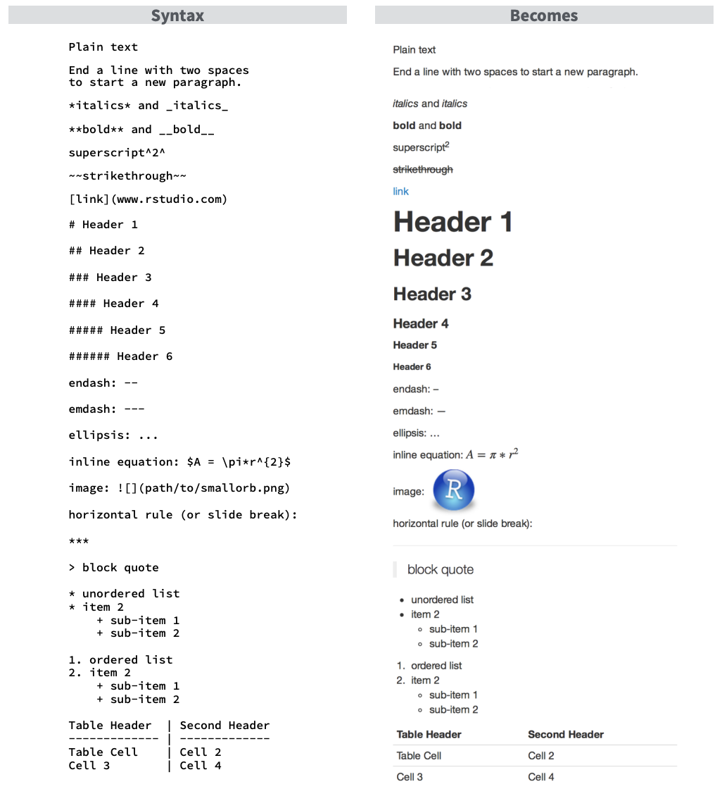
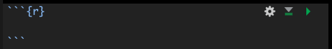

Reproducibility 2: More about Quarto
reproducibility
quarto
1 A recap
Last week: We introduced Quarto, created a basic .qmd file, and rendered it to HTML.
Today: We’ll explore more of what Quarto can do - how to control document metadata, customize appearance, manage code chunk options, and render to different formats.
Next week: We will go over file organization and RStudio Projects.

Open the .qmd document you created last week for Code Club. If you haven’t created one yet, start a new Quarto document by going to File > New File > Quarto Document.
Important
Heads up for next week! We’ll be diving into .Rproj files and why they’re essential for reproducible workflows. If you haven’t set one up yet, no worries — we’ll walk through it together next session.
Now that we have our Quarto document open, we can start exploring how changes to the file affect the output in real time.
Remember, there are three parts of a Quarto document:
- The YAML (rhymes with camel) header
- Text
- Code
2 YAML: The Control Center
Last week we talked about the YAML. The YAML is where you can set the content that will show up on the top of your knitted document, as well as control how your document is rendered. It defines metadata (title, author, date) and controls rendering.
The YAML is surrounded by three dashes ---.
Here’s a simple example:
---
title: "This is my descriptive title"
author: "Horacio Lopez-Nicora"
date: "September 15, 2025"
format: html
editor: visual
---But we can make some changes to arguments we pass to our YAML that will adjust how our resulting report looks. For example, the code below will add a table of contents, and number the sections according to the header levels we set.
---
title: "My document"
format:
html: # set parameters under the html category
toc: true # add a table of contents
number-sections: true # incremental numbering of sections
---Let’s look at what our options are for rendering to .html here.
2.1 Rendering to other formats
We’ve been practicing by rendering to a .htmlfile, but you can render your .qmd document to other formats, including PDFs, Microsoft Word, Markdown, and a special one that we will talk about in the coming weeks called Github [or Github Flavored Markdown (GFM)]. Here is an example of code from Jessica’s team that you might push to GitHub. It could also serve as supplementary material for a research paper.
You can see all the different formats you can render a Quarto document to here.
2.2 Themes
You can also change the theming of your document to make it look very pretty. Quarto comes with some complete themes, which we can look at here with Bootswatch. You can see the full list of complete themes here.
This website for example, uses the theme flatly (and darkly if you are a dark mode afficionado). The Quarto website uses the theme cosmo.
You can set your theme in your YAML like this:
---
title: "My document"
format:
html: # set parameters under the html category
theme: litera
---2.3 Practice
- Try adding a theme to your
.qmd - Add a new parameter to your YAML - you can pick one from here and see how that goes.
3 Text: Writing in Quarto
Unlike an R script (.R), where R by default interprets anything as code (and material that isn’t code needed to be commented out by using #), in an Quarto, the default is text (and code exists only within code chunks or backticks).
The text portion of the document is written in a language called Markdown. The philosophy of Markdown is that it is easy to both write and read. If you want to learn more about markup languages I’d recommend the this brief explanation by Michael Broe from a past Code Club Session and the Markup language wikipedia page.
Below I’m compiling some commonly used markdown syntax.
4 Code Chunks
As we learned last week, code chunks are sections of your Quarto document where you can run code. They support multiple languages, including R, Python, Julia, and Observable JavaScript, and allow you to integrate code directly into your document for dynamic output. To insert a new code chunk, you can:
- Use the keyboard shortcut
Cmd+Option+I(Mac) orCtrl+Alt+I(Windows). - Type
```{r}to start the chunk and```to end it, placing your code in between. - Use the “Add Chunk” command from the editor toolbar and select R.
Code chunks appear as follows:

You place your code on the empty line within the chunk. You can include multiple lines of code in a single chunk; however, if you find yourself needing to scroll through the chunk, it might be too lengthy.
- The gear icon allows you to modify chunk options, which we will discuss in more detail later.
- The triangle with a line below it executes all code chunks that precede the current one.
- The play button runs the current chunk.
Warning
When you render your Quarto document, the process will execute all the code within it. This means that if your code contains errors or doesn’t function properly, your document will not be rendered.
4.1 Code chunk options
We can set different options for our code chunks to adjust if/how they are run. Here are some that we can set.
echo: FALSEruns your code chunk, displays output, but does not display code in your final doc (this is useful if you want to show a figure but not the code used to create it)eval: FALSEdoes not run your code, but does display it in your final docinclude: FALSEruns your code but does not display the code or its output in your final docmessage: FALSEprevents messages from showing up in your final docwarning: FALSEprevents earnings from showing up in your final docfig.height: Xandfig.width: Ywill allow you to specify the dimensions of your figures (in inches)fig.align:can be set to “left”, “right”, or “center”fig.cap: "Your figure caption"will allow you to set a figure captionfig.alt: "Your alt text"will allow you to set alt text for screen readerscache: TRUEwill cache results, meaning if you have a chunk that takes a long time to run, if you haven’t changed anything and you knit again, the code won’t run again but access the cache.
You can find a long list of code chunk options here.
We can set the code chunk options 3 ways:
- by using the syntax
|#within the chunk, like this:
{r}
#| echo: TRUE
#| warning: FALSE- by clicking on the gear icon in the top right corner of a code chunk.
- within the
{r}of a chunk
{r, echo = TRUE, fig.width = 6}The options can be very useful to get your document to render exactly how you want it.
4.2 Practice
- Try adjusting your code chunk options and observe how they affect the rendering of your document.
- Load the
tidyversepackage in a code chunk usinglibrary(tidyverse). Notice how much text is printed. Can you adjust your chunk options so that tidyverse loads but the startup messages do not appear in your rendered report?
Hint (click here)
Think about the chunk option that controls whether messages from R packages get printed. It’s the same option you would use if you wanted to silence startup notes or other messages.
5 Other things you can make with Quarto
We have focused on using Quarto to store and annotate code, and create reports based on that information. But, there is lots more you can do with Quarto, including:
- Websites: we have a whole series of Code Club sessions on making a website with Quarto. This website is made with Quarto!
- Presentations: you can make pretty nice looking presentations, here’s a Code Club session on the basics of making presentations
- Books
- Manuscripts
- Dashboards
- and more
6 Key Takeaways
- YAML controls metadata, output, and appearance.
- Markdown keeps writing simple and reproducible, but when using the Visual Editor we can work with it much like any familiar word processor.
- Code chunk options give flexibility for analysis and presentation.
- Quarto is not only for documents—you can build slides, websites, and more.